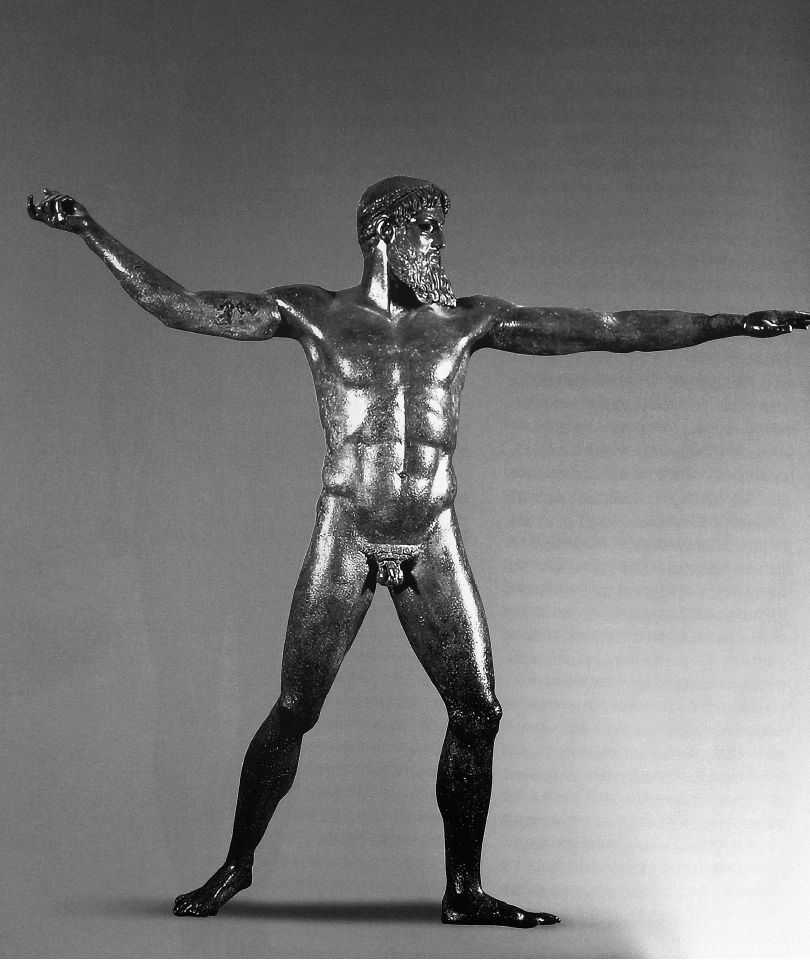
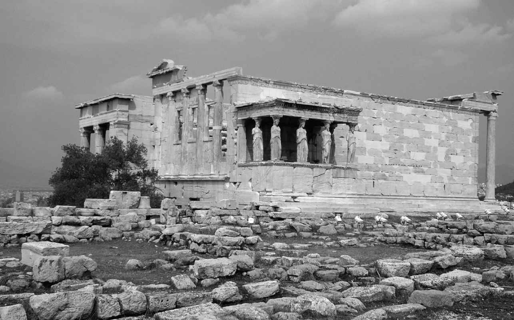
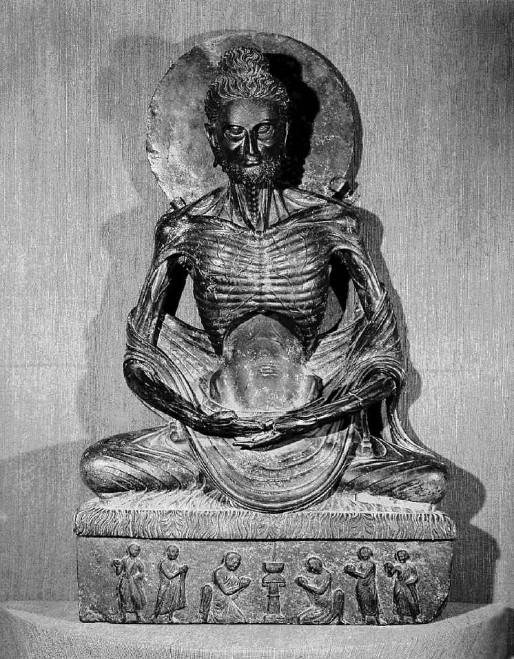
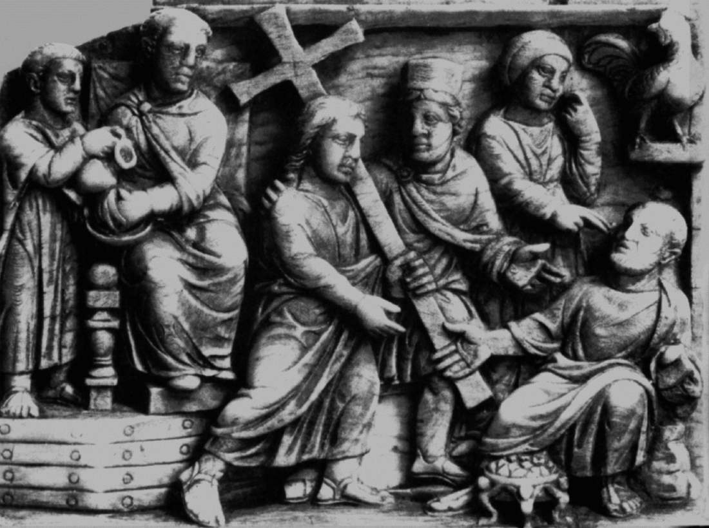

商业联结和文化联结既不是互不关联的，也不是彼此独立的。希腊文化传播整个东方，主要是靠追随亚历山大军队东进的希腊商人。同样，印度佛教传布到中国的过程也可以沿着举世闻名的丝绸之路了解到。不过，各种文化运动也都有它们自己内在的动力，并非完全依靠商人和商路。公元前2千纪末期发明的简单的字母文字，就是影响除中国以外整个古典世界文化发展的一个十分重要的因素。在那时以前，只有少数书吏能够阅读和书写美索不达米亚的结构复杂的楔形文字和埃及的象形文字。第一个字母文字系统是由西奈半岛的闪米特商人发明的。他们用自己所通晓的一些埃及字符来标示辅音，但又用许多别的符号来标示单词和音节，因而，他们的文字未能发展成为严格的音标文字。真正的音标文字是由腓尼基人完成的，他们于公元前13世纪将原有文字发展成由23个辅音音符组成的字母系统。这一字母系统后经希腊人增补元音字母而进一步完备。希腊字母又经过一些改进后，由罗马人向西传播，由拜占庭人向东传播。

图31 在阿特米修出土的走姿神像是一尊青铜塑像，约公元前460年制成。阿特米修位于希腊巨大的埃维亚岛（Euboea）北端的海滨。此雕像现存于雅典考古博物馆。此像到底代表哪位神还有待考证。有人认为他是手持三叉戟的波塞冬，也有人认为他是正在释放雷电的宙斯。不管属于哪种情形，它都是古典时代初期希腊雕塑艺术的杰出代表。
字母文字的出现具有十分重大的意义，因为它使智力交流的范围远远地超出了从前仅囿于祭司和官吏的那个圈子。埃及和美索不达米亚的书吏对这种新型文字自然是取回避的态度，几乎直到公元以前，他们都一直使用自己传统的文字。中国因与世隔绝，也使用自己原先的文字，这种文字是由表音和象形两种文字结合而成的，经过几次改进，一直使用到今天。但是，在欧亚其他地方，都采用字母文字，只是采用时稍许作了些变动，以适合各自不同的语言。这样做的结果是，无论哪里，在城市统治集团与农民群众之间，随文明的到来而不断扩大的裂缝虽然没有被完全弥合，但多少都缩小了。享有特权的知识分子集团对这种现状一般是支持的，因而，遭到了那些头脑简单的书吏的反对，书吏们煽起了某种骚动。这种骚动不仅使政治受到影响，也使文化受到了影响。印度著名的政治家和历史学家尼赫鲁在其著作《世界史概览》中给他十多岁的女儿英吉拉·甘地写一系列的信时，承认了这种骚动的重大意义：
肯定存在一股席卷整个世界的思潮，一股对现状不满且憧憬更美好事物的思潮。不要忘了，伟大的宗教创立者们总是追求更好的事物，总是试图改变他们的人民，提高他们，并减轻他们的痛苦……[1]
在古典时代的这些世纪里，欧亚各文明中显著的总体文化模式是，诸地方文化瓦解，被整合进拥有独特语言、宗教和社会制度的新型区域文明。对这些文明来说，交换有形的货物比交流具有不同特点的文化要容易得多。纺织品、香料和各种奢侈品到处可用、悦人心意，而祖先崇拜、种姓等级制度和城邦一超出它们的发源地就成了不合时宜、不受欢迎的东西。因而，在欧亚大陆的这一改组时期，地区间的商业联结通常比文化联结更广泛，更有影响。
不过，文化联结也的确在发展，而且，在某些情况下，还具有极其重大的历史意义。如希腊文化就是最突出的一例，它曾从希腊世界向东传播到亚洲，向西传播至欧洲。此外，将近古典时代末期，还兴起了伟大的世界性宗教，尤其是基督教和佛教；这些宗教不是要求任何一个团体，而是要求全人类皈依它们。
先考察希腊文化。“Hellenism”（希腊文化）一词是从希腊语单词“Hellas”（希腊）派生而来。希腊文化之所以能传播整个中东，主要是由于亚历山大大帝对中亚和印度河流域进行了举世闻名的东征。正如下一章将提到的，亚历山大帝国仅在亚历山大生前维持了数年。公元前323年，亚历山大去世，帝国即为他手下的将领所分割，以后，又为西方的罗马和东方的帕提亚人所瓜分。公元前4世纪和公元前3世纪，希腊在军事上占据优势，从而为成千上万的希腊商人、行政官员和各种专业人员成群地涌往亚历山大及其继承人所建立的许多城市（这些城市往往是以这位伟大的将军的名字命名的）铺平了道路。这些城市从最著名的埃及的亚历山大港到最东面的亚历山大城即阿富汗的科贾特，都成为传播希腊文化的中心。
虽然亚历山大统治下的居民多数没有希腊化，但典型的城市基本上都希腊化了，都有选举产生的地方行政官、议会和市民大会。一种新型的希腊语言即古希腊共同语成为整个中东的共同语。有许多希腊移民和当地妇女结婚，因为亚历山大本人就以身作则，娶了一名波斯贵族女子为妻，并于印度战役之后，安排了3000名士兵和波斯妇女举行大规模的集体婚礼。亚历山大还招募波斯士兵入伍，他本人还穿戴波斯君主的袍服和头巾，采用波斯朝廷的礼仪。
尽管希腊文化的传播给人以深刻印象，但它并没有在中东留下永久的印记。其根本原因在于，希腊文化的影响仅限于希腊殖民者居住的城市和一些希腊王朝的宫廷所在地。虽然有些本土民族也受到了影响，但真正受到影响的几乎仅囿于少数上等阶层。广大农村甚至许多城市的绝大多数人，仍继续说自己的语言，崇拜自己的神。因而，希腊文化并没有深深扎根，未能在它的一些移植地永久地幸存下来。当中世纪穆斯林征服者前来时，他们没费多大事就将希腊文化的这些小岛制服了。所以今天，希腊语言和文化仅幸存于巴尔干半岛南端的希腊本土。
希腊文化在地中海西部的生根要缓慢一些，因为当地土著居民的生活还不富裕，文明程度很低。若不是这一原因，希腊文化对该地区的长远影响，会由于当地文化的竞争力较弱而更为持久。
早在公元前6世纪，罗马人就已受到意大利南部希腊殖民地的影响，但直到3世纪起，也就是罗马人征服了巴尔干半岛和地中海东部地区的希腊文化的中心地带时，他们才感觉到希腊文化的全部力量。这时，罗马士兵和官吏与受过高度教育的希腊统治者和行政官员发生了直接交往，在他们带回罗马的人质和奴隶中有许多具有各种专长的希腊人——从伦理学家到杂技演员，从善于赞美的诗人到主厨。当上层阶级的罗马人耳闻目睹成熟老练的希腊臣民们的绚丽辞藻和高水准辩论时，他们的眼前就展现出一个全新的智识世界。
希腊人给罗马上层家庭当私人教师，讲授希腊语言、修辞学、哲学和文学。到公元前1世纪，送年轻的罗马人到雅典或罗得岛的哲学学校去受教育，已是很普通的事。在文学领域，罗马人最初只是翻译或模仿希腊原作，不过渐渐地，他们开始改以自己的生活为主题。
希腊对罗马和帝国其他城市的外观也有很明显的影响。希腊的陶立克、爱奥尼亚和科林斯这三种建筑形式都被采用了，不过罗马人的建筑物往往规模更大、装饰更华丽。因而，意大利的城镇和中东的一样，开始呈现处于希腊艺术和建筑的影响之下的相同外观。实际上，罗马人对文明的主要贡献就在于将希腊文化据为己有，适度改变，然后传播给从未直接接触过希腊文化的不同民族——高卢人、日耳曼人、不列颠人和伊比利亚人。
比希腊文化的影响要持久得多的是基督教和大乘佛教这两大世界性宗教的影响。基督教和大乘佛教于古典时代后期从各自的发源地中东和印度向外扩张；在随后的几个世纪中，基督教争取到了整个欧洲，佛教赢得了大部分亚洲。这两大宗教取得成功的原因可从它们共同具有的某些特点中找到。一个特点是，它们都着重于灵魂的拯救，允诺来世可获得永恒的幸福。另一特点是，都坚持平等主义；其团体的大门向所有请求加入的人敞开，不论是男子或妇女、富人或穷人、自由人或奴隶，都一视同仁。最后，都强调很高的道德准则，强调要灵魂得救就必须遵守这些准则；这一要求加上有效的教会组织，使这两大宗教能对虔诚徒众的日常生活产生重要影响。

图32 具有爱奥尼亚建筑风格的希腊伊瑞克提翁神庙。
这些特点在古典时代较后几个世纪里特别吸引人。在那几个世纪里，社会动荡、道德混乱，尤其在大城市，情况更是如此。城市里许许多多人感到无家可归、漂泊无定；对这些人，基督教和大乘佛教提供了安慰、保护和指导。当彼拉多问“真理是什么”、表达出时代的绝望情绪时，宗教给予了回答。因而，最早皈依基督教的都是些地位低贱、无所归依的人，这并非偶然之事。同样，大乘佛教的最大胜利是在中国，在汉朝崩溃之后全国处于混乱阶段、人世间的一些问题似乎找不到解答时取得的。
实际上，基督教和大乘佛教的这些令人满意的特点，正是应时代的需要而逐渐形成的。在基督教赖以发生的犹太教，或者后来分裂出大乘佛教的原始佛教中，则均没有这些特点。

图33 此为斋戒的佛陀像。在释迦牟尼修炼到“中途”之前，他已进行了为期六年的苦修。根据一个古典文献的记载，佛陀描述了自己当时的外貌和体态：“我的四肢像枯萎的藤蔓，关节外突；我的臀部就像水牛的硬蹄……我的肋骨就如破败的房屋的屋椽；我的眼珠深深地陷入眼窝深处，就像深井底部泛出的水光……”这尊甘达拉（位于现在的巴基斯坦境内）的佛陀雕像成像于公元前4世纪至前2世纪，它反映出了希腊文化对于早期佛教雕塑的影响。
犹太教是约公元前12世纪崇奉耶和华为民族之神的犹太人的地方性宗教。“我是耶和华，你的上帝……你应崇拜上帝而不可敬拜别的神。”这是耶和华《十诫》中的第一条，原意不是说耶和华是世界上唯一的神，而是说，他是以色列子孙的唯一的神。这一时期犹太教徒的信仰与其说是神秘和超俗的，不如说是社会和伦理的。用一位犹太先知的话来说，耶和华对仪式和祭品满不在乎，他关心的只是，人类应该“寻求公平，解救受欺压的，为孤儿申冤，为寡妇辨屈”。
但是，从公元前6世纪起，犹太教徒被波斯人和其他统治者的宗教信念所影响，改变了自己的宗教观念。此外，他们也受到了许多居住在巴勒斯坦以外地方的犹太人的影响，后者长期受希腊文化的熏陶，试图用希腊哲学的术语来解释犹太教。因而，犹太教徒逐渐汲取了有关来世的观念——顺从上帝的意志，就可以升入天堂，获得永恒的幸福，反之，将堕入地狱，遭到永久的惩罚。
基督教并没有立刻对分布广泛的各色人群产生吸引力；在耶稣生前和被钉死在十字架上之后不久，基督教只是一个犹太教派。是保罗使基督教广为传播。保罗生于小亚细亚的塔尔苏斯城，是一位希腊化的犹太人。他大胆地否认耶稣仅仅是犹太教徒的救世主，认为仁爱的上帝差遣他的独子耶稣来人间是为了要他替全体人类赎罪。因此，基督教不再是犹太教的一个教派，而发展成为一个新宗教，一个既为犹太人又为非犹太人信奉的宗教。保罗的做法使基督教从此以后不仅能吸引少数犹太人，而且能吸引整个罗马帝国千百万非犹太人。

图34 此为罗马帝国后期所制的描绘耶稣受难场景的象牙雕版，图中耶稣正扛着十字架走向刑场。
因此，尽管这一新宗教遭到官方的持续迫害，但仍壮大起来。公元313年，基督教终于因罗马皇帝君士坦丁公布米兰敕令而得到宽恕，392年，被罗马帝国接受为国教。罗马帝国崩溃后，在600年至800年间，基督教由传教士传布到英格兰和日耳曼诸民族；在800年至1100年间，传布到斯堪的纳维亚和斯拉夫诸民族。以后，随着欧洲的扩张，又由传教士和移民传布到世界各地。
佛教的发展情况同基督教有点相似，正如第六章中将要提到的，它始于印度人对种姓等级制度和婆罗门祭司阶级的剥削的独特反抗。佛教的创始人乔达摩·悉达多（约公元前563——前483年）是贵族出身，因对自己周围见到的种种不幸深感苦恼而舍弃优裕舒适的家庭，去过四处漂泊的苦行者生活。终于在似乎受到天启的刹那间，达到了彻悟的境界，从此被称为佛陀，意即“觉悟者”。
佛教的核心是四大真理：（1）人生是苦的；（2）苦的原因在于欲望；（3）只有消灭一切欲望，才能消灭苦因，断绝苦果；（4）要做到这一切，只有通过“八正道”。“八正道”包括正见、正志、正语、正业、正命、正精进、正念、正定；以涅槃为终极目的。所谓涅槃，意译为“空”“灭”。
佛陀并未打算建立一个新宗教，但他死后，弟子们布讲他的教义，并建立了一些开始对佛教起决定性影响的寺院团体。这些团体的理想是通过苦修身心最终达到神秘的涅槃境界。尽管对僧侣们来说，这一点是令人满意的，但它却忽略了俗人们的日常生活所需。因而，与“希那衍那”（小乘佛教）相对立的“摩诃衍那”（大乘佛教）逐渐发展起来。大乘佛教在包容一切这一意义上说，是“大”了，它除了吸纳人们改信大乘以前的某些宗教思想外，还兼容并包了更多前佛教时期的印度思想。它稍微改变了原先偏好默祷的做法，开始采用一些较易于领会、奉行的戒条。于是，只要有信仰，甚至只要有一个不动脑筋、表示信仰的举动，如念叨佛陀的名字，灵魂便可得救。涅槃的含义也改变了，至少对那些境界较浅的信仰者来说，涅槃仅指天国中的来世，而天国是很有可能进入的，只要乐善好施便行。
图35 印度桑吉佛塔，建于公元前3世纪至前1世纪，是世界上现存最古老的佛教遗迹。
大乘佛教从强调修道生活、苦行主义和默祷改为注重施舍行为、虔诚信仰和灵魂救赎，所以，对于非印度民族来说，它比小乘佛教更合口味，尽管两者都赢得了印度以外的皈依者。佛教在公元前3世纪时，首先流行于锡兰（今斯里兰卡）和印度西北部的边远地区。公元前1世纪时，传入中亚和中国，先是通过商人，以后又靠印度传教士和最得力的中国皈依者，后者在印度研习佛教，然后回国努力说服同胞信奉佛教。他们取得了很大成功，据说，到公元4世纪末叶，中国西北部90%的居民都信奉佛教，到6世纪时，中国南部的居民也跟着信奉了。接着，佛教又从中国进一步向其他地方传播：公元4世纪时，传入朝鲜；6世纪时，传入日本。在此期间，分裂为大乘和小乘两大教派的佛教还流行于东南亚。像上述这种情况，在以前或以后的任何特定阶段都未发生过，它体现了这一地区历时许多世纪的普遍印度化的一个方面。
佛教取得这些成功后，在许多国家里衰落下来。在中国，约700年时，佛教臻于极盛，但此后受累于内部的腐败和政府的敌视。佛教的兴盛使寺院拥有大量土地和财富，使众多的僧尼脱离国民经济，这一切引起官方的妒恨及随之而来的迫害。据官方记载，841年至855年间，有寺院4600余所和祠庙4万余个被拆毁，有僧尼26万余人被勒令还俗，和寺院奴隶约15万人一起，重新成为纳税户。佛教经过这次打击后，再也没有复兴过，以后，它跟道教和儒教一样，仅仅成为中国信仰诸说融合论者感兴趣的“三教”中的一个。同样，在印度，佛教最终让位于再度盛行的印度教。所以如今，在佛教发源地，实际上已找不到佛教信徒。不过在斯里兰卡和东南亚许多地方，小乘佛教至今仍居支配地位。
尽管佛教在其极盛时期以后相对而言衰落了，但在古典时代末期和中世纪初期，佛教仍是亚洲居支配地位的宗教。它广为流行于除西伯利亚和中东之外的亚洲大陆，从而使这块巨大区域的文化整体化达到空前绝后的程度。它在亚洲发挥伟大的文明教化作用，就跟同时期的基督教在欧洲所起的作用一样。佛教带给许多民族的不仅是宗教信仰和一套伦理规范，而且还有文字体系、建筑式样，以及伟大的印度文明和中国文明的其他一切特征——这些也是由传教士在传布佛教时传到大陆各地。同样，在欧亚大陆另一端，基督教传教士带给野蛮的日耳曼和斯拉夫诸民族的，除了基督的教义外，还有罗马文明和君士坦丁堡文明。以上所述，就是这些强有力的“文化联结”对欧亚诸民族的影响和历史意义。
在古代文明的数千年中，中东一直是首创精神的中心。正是中东，在那一段时期里对人类做出了十分重大的贡献，如发明了农业、冶金术、城市居民的生活方式和帝国组织等。但是，到了古典时代，中东的优势渐渐消失，只有一个领域除外，那就是宗教。不仅犹太教，而且还有琐罗亚斯德教，都根源于中东。虽然后者如今只有印度的少数帕尔西人信奉，但在波斯帝国处于鼎盛期时，它对中东有过可观影响。
佛教在印度和中国
欧亚大陆的整体化始于古典时代，而起联结作用的，部分是商业，部分是文化。佛教是一个在文化交流中起重要作用的因素。这一点，从一个名叫玄奘的中国僧人的以下经历中可以清楚地看出来。他于公元629年至645年间访问了印度的许多寺庙。当他在那烂陀寺（Nalanda Monastery）宣布自己决定返回中国时，僧人们的反应是发人深省的。*
那烂陀寺的僧人听到玄奘的决定后，纷纷请求他留下来。他们说：“印度是佛陀的诞生地，虽然他已离开尘世，但他的许多遗迹依然存在。世间还有什么比依次寻访佛陀遗迹，崇拜佛陀、歌颂佛陀更令人愉快的呢？况且，中国是微不足道的野蛮人待的地方，这些野蛮人都鄙视宗教，鄙视［佛教］信仰。这就是佛陀不诞生在那里的缘故。中国人心胸狭隘、冥顽不化，圣人和贤人都不去那里。那里气候寒冷、国家破败，你必须三思而后行啊。”
法师（玄奘）回答说：“佛陀创立教义，是为了将教义传布到所有地方。谁愿意独享佛法？谁愿意忘记那些不曾受到教育的人？再说，在我的祖国，官员穿戴威严，法律人人遵守。皇上公正，臣民忠诚，父母慈爱，子女孝顺，人伦正义深受尊崇，老人贤人备受爱戴。还有，中国人的知识深不可测，他们的智慧不逊鬼神。他们效法上天，知道如何计算七个天体的运行；他们发明了各种工具，确定了一年的四季……如此这般，你们怎能说佛陀没去我国是因为我国无足轻重？”
* J. Needham, Science and Civilization in China（Cambridge University, 1954）, Volume I, pp. 209-210.
不过，事实依然是，在古典时代，除了这些宗教及其有关的教派外，中东已不再是创造发明的重要发源地。古典时代时形成并在许多情况下留存至今的新思想和新制度，都是先前欧亚大陆外围区域的产物。因此，以下三章主要论述这些区域的文明——希腊——罗马文明、印度文明和中国文明。在考察这些文明之前，我们应注意到，欧亚大陆诸伟大宗教的影响，至今依然可感。比如说，它们关于战争与和平的教导，对处在20世纪和21世纪的各民族来说，依然很有意义。孔子曾说过：“四海之内皆兄弟。”在《圣经·旧约》中，先知弥迦也发表了同样的伟大见解，这一见解如今已成为联合国的座右铭：“他们要将刀打成犁头，把枪打成镰刀。这国不举刀攻击那国，他们也不再学习战事。”诸伟大宗教所具有的这一共同意义，在1986年10月27日明显地显示出来，因为这一天，它们的代表一齐参加了教皇保罗二世主持的“世界和平祈祷日”。以下不但是其他信条中的一些选段，而且也是他们祷辞中的一些选段：[2]
佛教
愿代众生，受无量苦；令诸众生，毕竟大乐。
基督教
只是我告诉你们这听道的人，你们的仇敌，要爱他；恨你们的，要待他好；咒诅你们的，要为他们祝福；凌辱你们的，要为他祷告。有人打你这边的脸，连那边的脸也由他打。有人夺你的外衣，连里衣也由他拿去。凡求你的，就给他。有人夺你的东西去，不用再要回来。你们愿意人怎样待你们，你们也要怎样待人。
犹太教
我们的上帝在天堂。和平之主将会同情和怜悯我们，将会同情和怜悯地球上所有祈求他的同情和怜悯的民族。让我们祈求和平，追求和平。
非洲万物有灵教
万能的上帝啊，您是我们打结时不可或缺的伟大的拇指，您是能劈开大树的咆哮的雷电，您是站在高处能看清地面石块上留下的羚羊脚印的洞察一切的主。您毫不犹豫地对我们的要求作出反应。您是和平的基石。
美洲印第安人
在抽烟的时候，我会邀请我的家人和你我一起分享；现在，我的朋友们，让我们一起以感恩的心情来为今天、为世界和平祈祷。我祈祷，不管是在家庭内、在部落里还是在自己的国家中，我们都能为和平祈祷、为和平努力。我为在孕育万物的大地上行走的所有兄弟姐妹祈祷。
［推荐读物］
欧亚大陆诸地区间的联系在G. F. Hudson所著Europe & China: A Survey of Their Relations from the Earliest Times to 1800（Edward Arnold出版社，1931）这部写得很好的论著中得到了清晰的分析。另外，还可参阅J. Needham所著的多卷本著述Science and Civilization in China（Cambridge University出版社，1954），该书的第一卷从整体上考察了中国与欧亚大陆其他地区的交流，包括关于文化传播的理论分析。有关欧亚大陆商业联结的各个方面在下列著述中得到了较好的阐述：A. Toussaint所著的History of the Indian Ocean（University of Chicago出版社，1966）、S. Chandra主编的The Indian Ocean: Explorations in History, Commerce, and Politics（Sage出版社，1987）、D. Harden所著的The Phoenicians（Praeger出版社，1962）、E. H. Warmington所著的The Commerce Between the Roman Empire and India（Cambridge University出版社，1928）、Ying-shih Yu所著的Trade and Expansion in Han China（University of California出版社，1967）、J. I. Miller所著的The Spice Trade of the Roman Empire, 29 B. C. ——A. D. 641（Oxford University出版社，1969）、C. G. F. Simkin所著的The Traditional Trade of Asia（Oxford University出版社，1969）以及P. D. Curtin所著的Cross Cultural Trade in World History（Cambridge University出版社，1984）。
关于欧亚大陆的文化联结，可以参阅H. G. Rawlinson所著的Intercourse Between India and the Western World（Cambridge University出版社，1916）、E. Zürcher所著的Buddhism: Its Origin and Spread（St. Martin's出版社，1962）、R. MacMullen所著的Christianizing the Roman Empire, A. D. 100—400（Yale University出版社，1984），以及J. Pelikan所著的Jesus through the Centuries（Yale University出版社，1985）。
［注释］
[1]Jawaharlal Nehru, Glimpses of World History（Oxford University, 1982）, p. 35.
[2]New York Times, October 28, 1986.